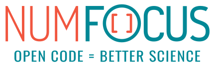

SunPy is a community-developed free and open-source software package for solar physics. SunPy is meant to be a free alternative to the SolarSoft data analysis environment which is based on the IDL scientific programming language sold by Exelis. Though SolarSoft is open-source, IDL is not and can be prohibitively expensive. The aim of the SunPy project is to provide the software tools necessary so that anyone can analyze solar data. SunPy is written using the Python programming language and is build upon the scientific Python environment which includes the core packages NumPy, SciPy. The development of SunPy is associated with that of Astropy. SunPy was founded on March 28, 2011 by a small group of scientists and developers at the NASA Goddard Space Flight Center. Thanks to the generous support of the ESA Summer of Code and the Google Summer of Code as well as contributors from around the world, SunPy is now a global project and is not associated with any individual institution.
SunPy (the project) is run by the SunPy organization. This organization was founded and defined by this document. Its primary goal is to facilitate and promote the use and development of a community-led, free and open-source solar data-analysis software based on the scientific Python environment. The organization consists of a lead developer, a board of directors, and the developer community. The purpose of the board is to lead the overal structure and direction of SunPy while the lead developer works with the developer community to implement it.
The IDL-based SolarSoft analysis environment is a mature and rich code base to do Solar physics. Unfortunately not every person or institution have the capital necessary to fund a yearly IDL license. With the rise of scientific computing in Python new tools are now available to make developing the basics of a solar data analysis environment straightforward.
Most of them include talks about the core of the SunPy library, the organisation and its goals. Some of these talks from workshops such as Python in Astronomy (2016) and Scipy (2013) are listed below.
The continued growth and development of SunPy is dependent on the community being aware of the use SunPy. If you use SunPy, we therefore ask that you acknowledge SunPy appropriately in a publication or presentation (poster or talk).
Part of the development of SunPy has been generously supported by the Google Summer of Code (GSOC) as well as the European Space Agency Summer of Code in Space (SOCIS). Both of these programs have funded several students to work on SunPy for a few months (usually during the summer).
If you like SunPy and want to support our goal that is to facilitate and promote the use and development of a community-led, free and open-source solar data-analysis software based on the scientific Python environment, consider making a donation to our project.  Tweet